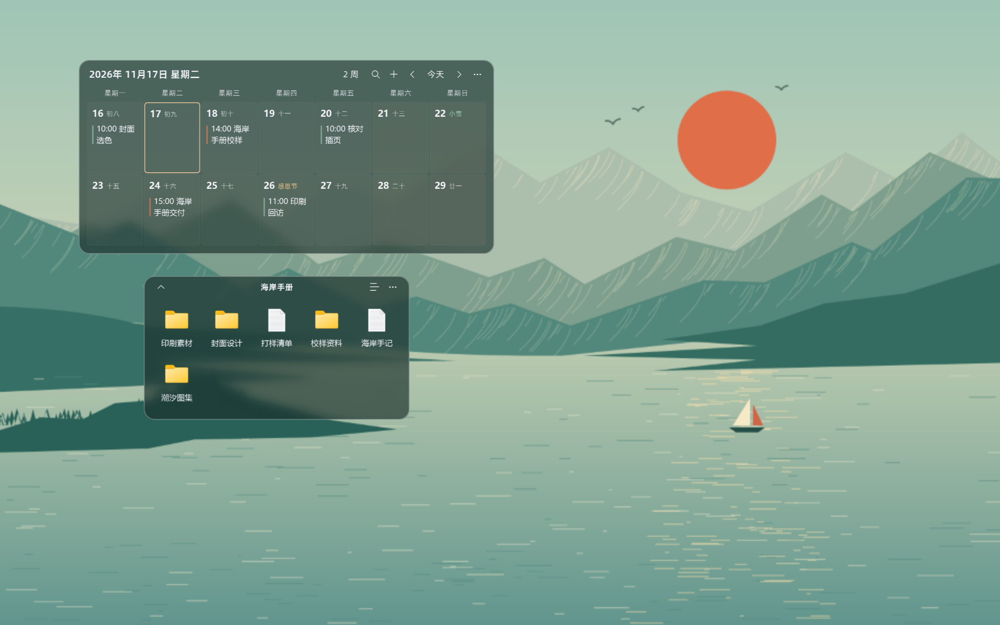

按项目收纳文件与文件夹
每个文件格对应一个本地目录。拖入文件即可归档，按住 Ctrl 拖动可保存副本。格子和资源管理器共享同一份内容。

每个文件格对应一个本地目录。拖入文件即可归档，按住 Ctrl 拖动可保存副本。格子和资源管理器共享同一份内容。
文件格可以移动、缩放和锁定。底色强度、壁纸磨砂与圆角可独立调节，适配不同明暗的桌面背景。
周历按天排列事项，可调整显示周数，用色条区分优先级。切换到清单后，同一组事项按日期集中显示。
双击日期即可记录事项，只填写标题也能保存。需要跟进的事项可设置起止时间、提前提醒和重复规则，也可附上本地文件。
按 Ctrl + Alt + Space 唤起搜索。文件结果显示所属格子，日程结果显示日期。可直接打开结果，也可在资源管理器中定位文件。
双击空白处可临时隐藏桌面内容，为演示和屏幕共享留出空间。再次双击即可恢复之前的布局。
为每个格子指定存储位置，或在公共父目录下使用同名子目录。移除格子时保留文件。
切换单周、多周或日程清单，导入导出 ICS。应用常驻时可以接收提醒。
按 Ctrl + Alt + Space 一起查找文件和事项。Enter 打开结果，Ctrl + Enter 定位文件。
新软件创建桌面快捷方式时，可按规则归类。程序仍在原安装位置。
导入壁纸后单张显示或轮播。显示器变化、电脑唤醒时，布局会按工作区恢复。
日常备份保存设置和日历；换电脑时可把收纳文件、附件与壁纸一起迁移，导入时校验文件。
适用于 Windows 11 x64。安装包自带 .NET 8，升级时沿用原安装位置。